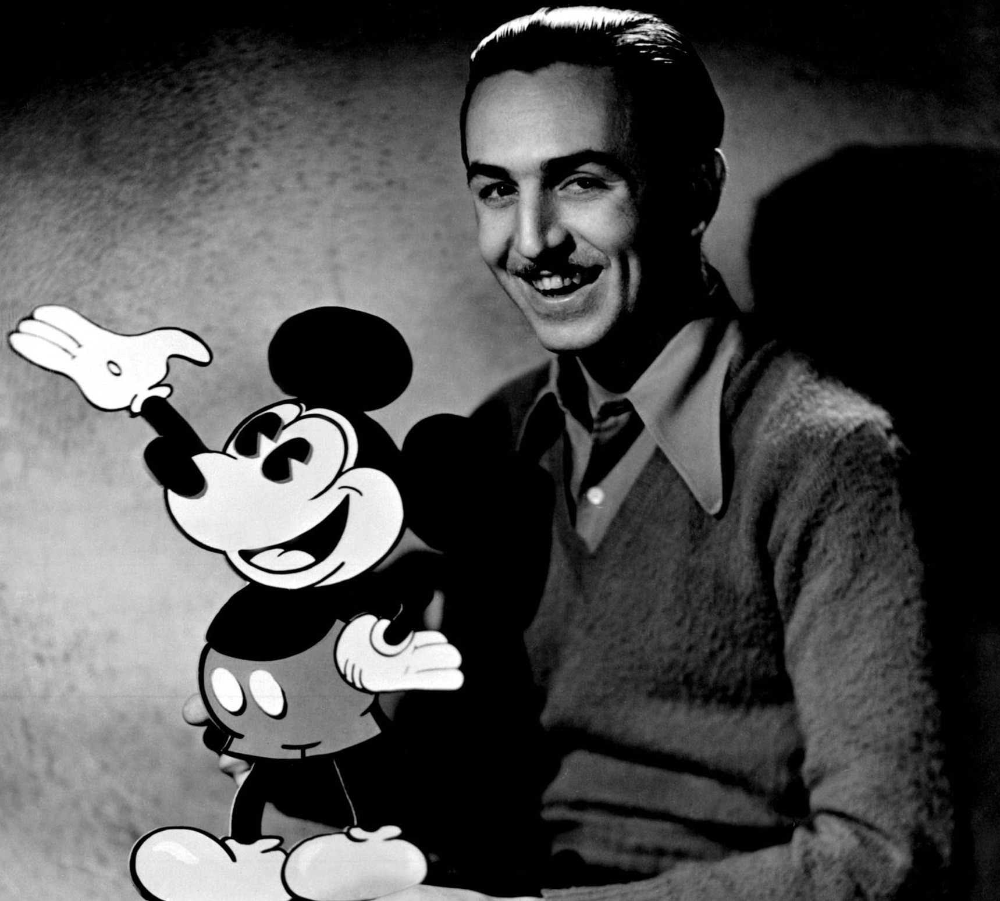

Walter Elias Disney, conocido mundialmente como Walt Disney, fue un dibujante, magnate y visionario que se convirtió en un símbolo de la cultura norteamericana del siglo XX. Cuando hace 91 años dio vida a una de sus creaciones más emblemáticas, el ratón Mickey Mouse, no podía ni imaginar la fama que alcanzarían sus personajes. Aunque decían de Disney que era un hombre lleno de sueños, ambicioso y muy perfeccionista.